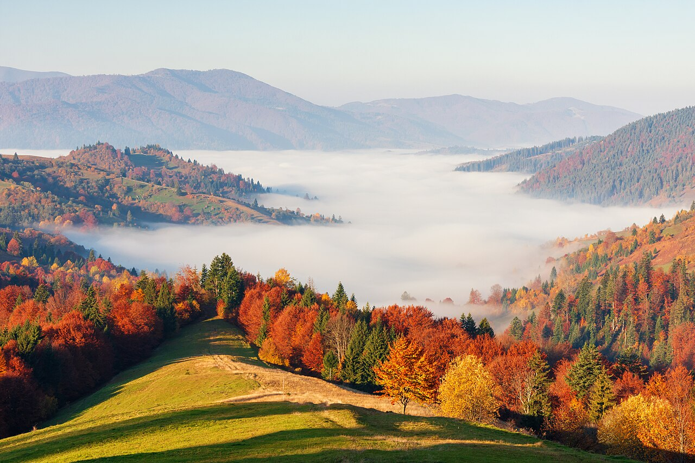

Every autumn the same trees that were green all summer turn gold and red. It looks like magic, but it is a quiet chemical process that starts with shorter days. Here is how it works, step by numbered step.
Every year around this time, the world puts on a show. Trees that were green all summer slowly turn gold, orange, and brilliant red — and then drop their leaves. It looks like magic, but it is really chemistry. Here is what is happening, one step at a time.
1. Green comes from a busy little molecule
During spring and summer, a leaf is green because of a special pigment called chlorophyll. Chlorophyll does the most important job in the plant world: it captures energy from sunlight to make food through photosynthesis. There is so much of it packed into a leaf that it masks every other color hiding underneath. A summer leaf is basically a green factory.
2. Shorter days send the signal
Here is the surprise: a tree does not check a calendar. It reads the light. After summer, the days grow shorter and the nights longer, and that tells the tree winter is coming. Like a slow alarm clock, the tree begins to shut down its leaf factories. Chlorophyll production slows, stops, and the green pigment that is already there starts to break down. As it disappears, the colors that were underneath the whole time finally get their turn to shine.
3. The yellows were always there
Those yellow and orange shades come from pigments called carotenoids — the same family of colors that makes carrots orange and corn yellow. Carotenoids live in the leaf all summer, but green chlorophyll was covering them up. When the chlorophyll fades, the yellows and oranges appear almost instantly. That is why the first hint of fall is usually gold.

4. The reds are made fresh
This is the neatest trick of all. The reds and purples do not just get revealed — they get made right there in the leaf, near the very end. As the tree shuts down, sugars sometimes get trapped in the leaf. On bright, sunny days, those sugars combine with other chemicals to create brand-new pigments called anthocyanins. Trees like maples, oaks, and dogwoods produce them. This is why sunny days plus cool nights produce the most dazzling reds, and why some autumns are redder than others.
5. The leaf lets go (on purpose)
At the base of the leaf stem, the tree grows a layer of corky cells called the abscission layer — think of it as a tiny zipper that cuts off the leaf's water and sugar supply. The leaf finishes its color change, dries out, and finally falls when the zipper closes completely. That is why leaves do not usually all fall on one windy day; the tree releases them gradually, one by one.
6. The weather paints the picture
The chemistry happens every autumn, but how brilliant the colors are depends on the weather. Sunny days boost sugar production and anthocyanins, so reds glow. Cool nights help too. But if it is rainy and cloudy, the colors stay muted and duller. That is why no two autumns look exactly the same — the weather is part of the painting each year.
So the trees are not just turning pretty colors by accident. They are carefully breaking down their summer chemistry, saving the good bits, and getting ready to rest through winter. And when the leaves finally fall, the forest floor gets a golden carpet.
The next time you crunch through autumn leaves, you can tell yourself exactly what happened up in the branches — sun, sugars, and a whole lot of patient chemistry.
Sources: Harvard Forest — The Process of Leaf Color Change · Penn State Extension — The Science Behind Autumn Leaf Color · NOAA — Cool autumn weather reveals nature's true hues